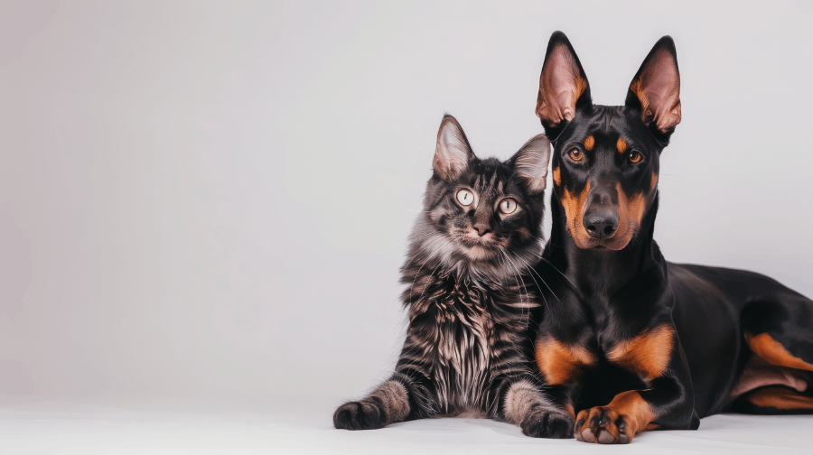

Siempre la misma cuidadora
Trato constante, sin cambios de persona. Tu mascota se acostumbra a mí.
En Madrid y alrededores. Siempre la misma cuidadora, actualizaciones con fotos y respeto por sus rutinas.
Reserva ahora
No soy una empresa con varios cuidadores: siempre seré yo. Cuidado cercano, respetando rutinas y con actualizaciones para tu tranquilidad.
Trato constante, sin cambios de persona. Tu mascota se acostumbra a mí.
Te mantengo al tanto en cada visita o paseo, para que estés tranquilo/a.
Me adapto a sus hábitos: comida, paseos, medicación y nivel de energía.
Servicios de cuidado de mascotas en Madrid: atención personalizada y actualizaciones.
Paseos adaptados a su energía y rutina. Ideal para perros que necesitan actividad diaria.
Comida, agua, limpieza, mimos y fotos. Perfecto para gatos o mascotas que se quedan en casa.
Te ayudo con traslados y visitas cuando no puedes. Con calma y cuidado.
Respuestas rápidas para que sepas cómo trabajo y qué esperar.
Trabajo en Madrid y alrededores cercanos. Si me dices tu zona o barrio, te confirmo disponibilidad y tiempos.
Escríbeme por WhatsApp con la fecha, horario y tipo de servicio. Te confirmo y dejamos todo cerrado en minutos.
Agua y comida (según instrucciones), limpieza básica de la zona, mimos/juego y actualización con foto o mensaje.
Si buscas tranquilidad y alguien que cuide a tu peludito con cariño, responsabilidad y atención personalizada, estoy aquí para ayudarte.
Escríbeme y coordinamos todo de forma sencilla y cercana.
Escríbeme por WhatsApp